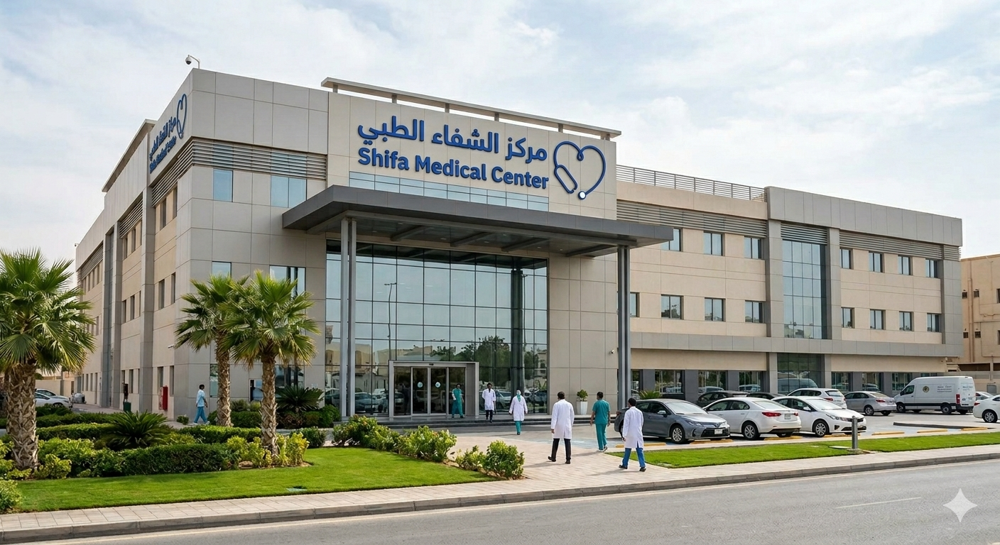

رسالتنا في مركز الشفاء الطبي
في مركز الشفاء الطبي نؤمن أن الرعاية الصحية الحقيقية تبدأ بالاهتمام بالإنسان قبل أي شيء آخر، لذلك نعمل على تقديم خدمات طبية متكاملة تجمع بين الكفاءة، الرحمة، والدقة في التشخيص والمتابعة. نسعى إلى أن يكون المركز مساحة يشعر فيها المريض بالثقة والطمأنينة، ويحصل فيها على عناية صحية تليق باحتياجه وتفاصيل حالته.
نطمح في مركز الشفاء الطبي إلى أن نكون وجهة طبية موثوقة ومتكاملة، تجمع بين الجودة الطبية، الراحة النفسية، والخدمة الإنسانية الراقية، لنكون الخيار الأقرب لمرضانا والأكثر حضورًا في رحلتهم نحو الشفاء.
نلتزم بتقديم رعاية صحية متميزة تقوم على الخبرة الطبية، حسن المتابعة، وسرعة الاستجابة، مع الحرص على توفير بيئة علاجية آمنة ومريحة تُشعر المراجع بالاهتمام والاحترام في كل خطوة.
